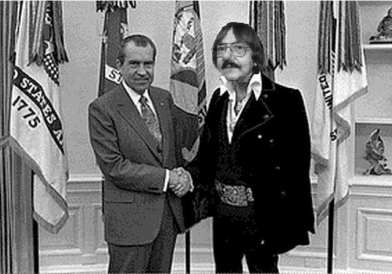

De: La Frikipedia, la enciclopedia extremadamente seria.
De: La Frikipedia, la enciclopedia extremadamente seria. De: La Frikipedia, la enciclopedia extremadamente seria.

|
Este artículo necesita ser ilustrado. Busca una afoto en nuestro depósito de imágenes o donde sea y ponla, pero que no sea pr0n, que se cabrea el señor del adSense y nos corta el grifo de los dólare. Y sin dólare no hay servidor... |
| De la serie gobernantes de ayer y de hoy: | |||
| Richard Nixon | |||
| |||
| Nacimiento | Antes de la segunda guerra mundial | ||
| Muerte | |||
| Cargo | Ejecutar de vietnamitas | ||
| Ideología | Republicano Anticomunistas | ||
| Nacionalidad | Estado Unido | ||
| Cónyuge | Tu | ||
| Dinastía | ... | ||
| Notas | |||
Richard Nixon (clon. Gracias a Frikileaks se conocen diversos hechos ocultados a los ojos del mundo. Es el mayor enemigo de Krusher.
Se convirtió al Quakerismo, dado su gusto por los juegos de PC. Dado que posteriormente descubrió que, el PC no se inventaría hasta los años '80 y que el Quake no saldría hasta 1996, se enroló en la marina y participó en la Segunda Guerra Mundial.
En esta guerra conoce a Robert Edward Lee Oswald, y le convence para que su hijo Harvey se hiciera marine. Se incorporó a su recién inaugurado equipo de especialistas, que intentará dominar el mundo los años siguientes.
El equipo de Richard Nixon, que incorporaba a otros soldados, consigue que Nixon adquiera popularidad como el propulsor del comité de actividades antiamericanas al final de los años 40 una vez terminada la guerra. A principios de los 50 consigue ser senador por California. Su grupo especial se asienta y se incorpora un joven Harvey.
En 1961 gana las elecciones John Fitzgerald Kennedy, lo cual es considerado un obstáculo para Nixon. En 1963 JFK es asesinado por Harvey y Nº 2 (nombre desconocido) con dos disparos realizados por Nº 2 (uno de ellos impactando a JFK en la cabeza y en la mandíbula) y uno por Harvey, que falla. En la huída Harvey es detectado por un policía y es detenido. El grupo lava entonces el cerebro a Jack Ruby, vinculado a la mafia y en el bolsillo del grupo gracias a favores en el pasado. Mediante el lavado de cerebro, consiguen que maten a Harvey por temor a que destapase el grupo especial. Esperando conmutar su condena a muerte, Jack Ruby muere envenenado simulando un cáncer de pulmón.
Toma posesión de la presidencia Lyndon Johnson, un presidente mucho menos popular que JFK. Gracias a su carisma y propaganda, en el año 69 gana las elecciones y se convierte en presidente de los Estados Unidos.
Impulsó el "Nuevo Federalismo" y la "Ley y Orden", con la que se ganó el clamor popular. Mientras tanto, con acceso a los archivos presidenciales y secretos, consigue controlar la agencia de inteligencia CIA, la TIA, el FBI y el Telepizza. Su popularidad sube con la buena situación económica y por su política de desarme. Sus compañeros del partido republicano ven esto con recelo, pero el grupo decide continuar.
 En los años 70 culminó la integración e infiltración del grupo en las infraestructuras de defensa e inteligencia del país, por lo que Nixon decide retirarse de la vida pública. el Soldado nº 3, conocido entonces como Garganta Profunda y posteriormente identificado como William Felt, orquestó un plan por el que Nixon simularía un escándalo político para abandonar rápidamente el mandato presidencial para proseguir su plan de conquista mundial.
Durante los años posteriores, varios escritores de éxito escriben para Nixon dos best sellers, Mis Memorias y No Más Vietnam. En 1994 pone en marcha su plan de dominación mundial junto a su grupo secreto, que según Frikileaks se cifra entre 7 y 12 soldados. Nixon simula su muerte con un clon, realizado con tecnología secreta de la CIA. El plan comienza y es bautizado como TRATS 01.
En 2005 se funda Frikipedia, la enciclopedia extremadamente seria, que se declara abiertamente como oponente de Nixon para dominar el mundo. Mediante su red de espías Frikileaks, consigue la información que concierne a Richard Nixon y su relación con el asesinato de JFK. Nixon se convierte en el mayor enemigo de Krusher, y actúa instigando a la Innombrable para que destruyera la Frikipedia. Aunque casi lo consigue, Nexo y Leolo consiguen reflotar la web. Krusher se incorpora a su labor íntegra en Frikileaks, consiguiendo la información de este artículo.
Autor(es):